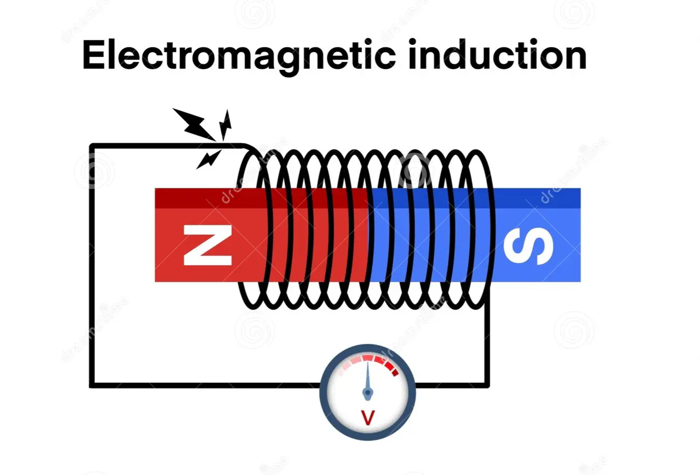
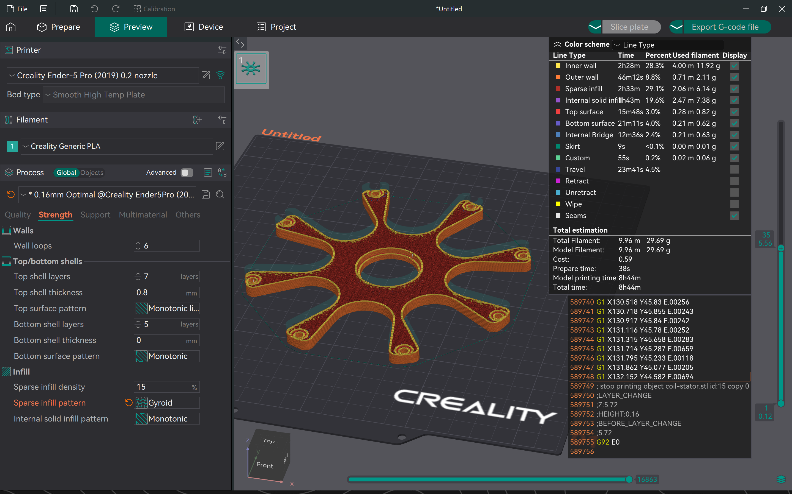
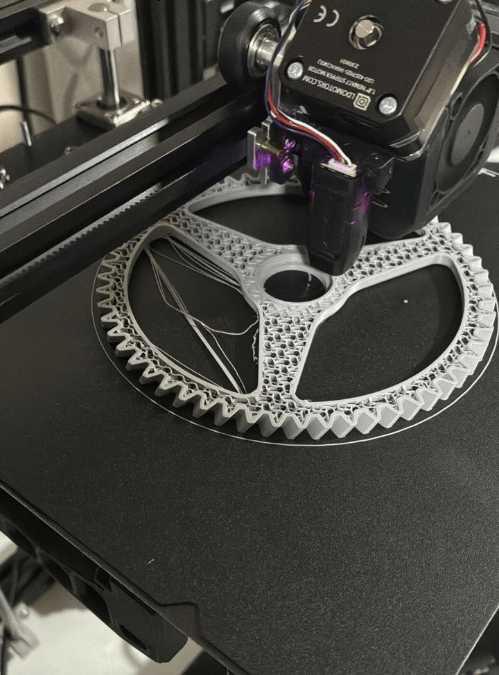
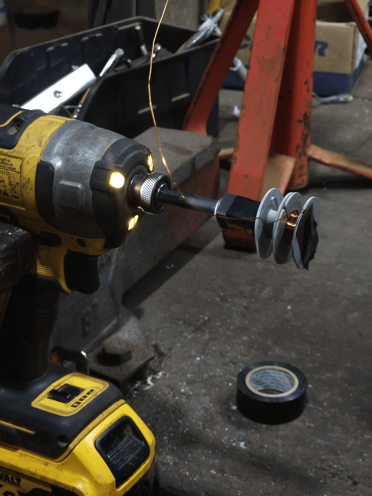
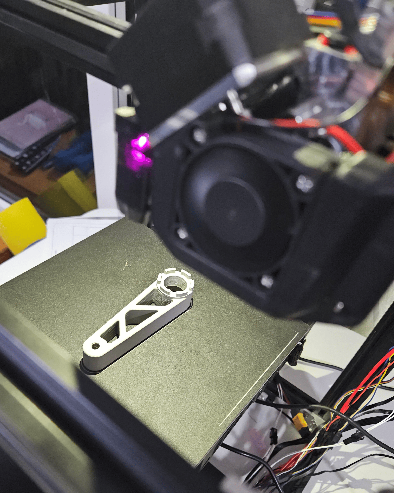
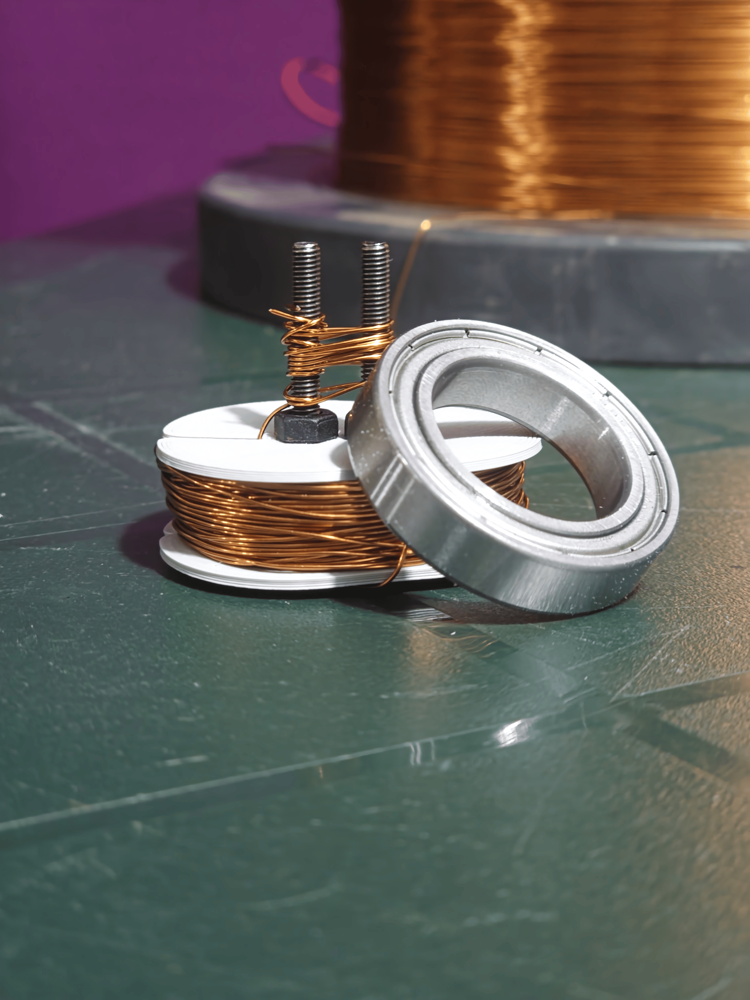

Introducción
En este trabajo se presentará la inducción electromagnética con sus características, sus usos y su importancia para la física. Se mostrarán las relaciones entre la electricidad y el magnetismo: cómo un campo magnético puede generar electricidad, así como cómo una corriente eléctrica genera un campo magnético.
Se explicarán principios básicos del electromagnetismo, incluyendo la ley de Faraday y la ley de Lenz, y se realizará un experimento usando un generador para producir corriente eléctrica y alimentar dispositivos electrónicos como luces. También se detallarán los materiales utilizados y el procedimiento paso a paso.
Objetivos
Los objetivos puestos por el grupo son:
- Conocer más sobre la electricidad y el magnetismo.
- Construir un generador eléctrico funcional.
Marco Teórico
1. Definiciones
1.1 Electricidad
La electricidad es una forma de energía que se manifiesta con el movimiento de los electrones de la capa externa de los átomos en un material conductor. El movimiento de cargas eléctricas a través de un medio conductor se conoce como corriente eléctrica y se origina al poner en contacto dos elementos con diferente potencial.
1.2 Voltaje (V)
El voltaje es la diferencia de potencial eléctrico. Representa la "fuerza" que impulsa a los electrones a moverse por un conductor. Un voltaje por sí solo no determina el peligro; el riesgo depende también de la corriente posible.
1.3 Corriente o Amperaje (A)
La corriente mide la cantidad de electrones que circulan por un conductor por unidad de tiempo. Incluso corrientes pequeñas pueden ser peligrosas: 30 mA puede provocar contracción muscular; 100 mA o más puede provocar fibrilación ventricular.
1.4 Potencia Eléctrica (W)
La potencia eléctrica es el producto del voltaje por la corriente (W = V × A). Representa la cantidad de trabajo eléctrico realizada por unidad de tiempo.
1.5 Resistencia (Ω)
La resistencia es la oposición que presenta un material al paso de la corriente, medida en ohmios. Depende del material, la longitud, la sección y la temperatura del conductor.
1.6 Ejemplo práctico
Una analogía común: voltaje es la presión del agua, corriente es el volumen que fluye, resistencia es el estrechamiento de la manguera, y potencia es el volumen total transportado por unidad de tiempo.
1.7 Relación entre las variables
La ley de Ohm relaciona estas magnitudes: V = I × R. La potencia es P = V × I.
1.8 Magnetismo
El magnetismo es un fenómeno natural asociado a campos magnéticos que tienen dirección y magnitud. Las líneas de campo indican la dirección desde el polo norte al polo sur. El electromagnetismo es la unión de electricidad y magnetismo: una corriente genera un campo magnético y un campo magnético variable puede inducir una corriente.
2. Electromagnetismo e Inducción
2.1 Inducción electromagnética
La inducción electromagnética es el proceso por el cual se induce una corriente mediante un cambio en el campo magnético que atraviesa una espira o bobina.
3. Leyes fundamentales
3.1 Ley de Faraday
Faraday descubrió que la tensión inducida en un circuito es proporcional a la variación del flujo magnético que lo atraviesa. Esta relación se expresa habitualmente como ε = −dΦ/dt.
3.2 Ley de Lenz
La ley de Lenz establece que la dirección de la corriente inducida es tal que se opone al cambio en el flujo magnético que la produjo. Es una consecuencia de la conservación de la energía y aparece como el signo negativo en la expresión de Faraday.
3.3 Experimento de Faraday y aplicaciones
En el experimento clásico de Faraday, al mover un imán dentro de una bobina aparece una tensión que varía según la posición y la velocidad del imán. La inducción electromagnética se aplica en generadores, transformadores, cocinas de inducción, recarga inalámbrica, lámparas de inducción y detectores de metales.
Resultados
Se logró el objetivo principal de construir un generador funcional que produjo alrededor de 2.5 voltios en las pruebas realizadas.
Observaciones y detalles:
- Las piezas impresas en 3D salieron bien en general; una rueda dentada mostró algunas imperfecciones de impresión.
- Los rulemanes inicialmente presentaron fricción al ajustar, pero finalmente quedaron en su lugar y permitieron rotación aceptable.
- Algunos pernos con hombro presentaron fallas de fabricación y fue necesario eliminar material para que encajaran en los rulemanes.
- Se corroboró la relación entre velocidad de giro y voltaje generado, y la necesidad de reducir la ondulación mediante capacitores y regulación.
- El proyecto permitió también ampliar el conocimiento del grupo sobre voltaje, corriente y resistencia.

Conclusión
Se alcanzaron los objetivos planteados: aprender sobre la electricidad y el magnetismo, y construir un generador utilizando los principios del electromagnetismo. El trabajo exigió diseño, impresión, montaje y ajuste fino, y terminó con un generador capaz de producir una salida útil para pequeñas cargas.
Además del dispositivo, el grupo mejoró su comprensión sobre variables eléctricas (voltaje, corriente, resistencia) y las precauciones necesarias al trabajar con electricidad.
Biblioteca
Galería de imágenes del proyecto y su desarrollo.




